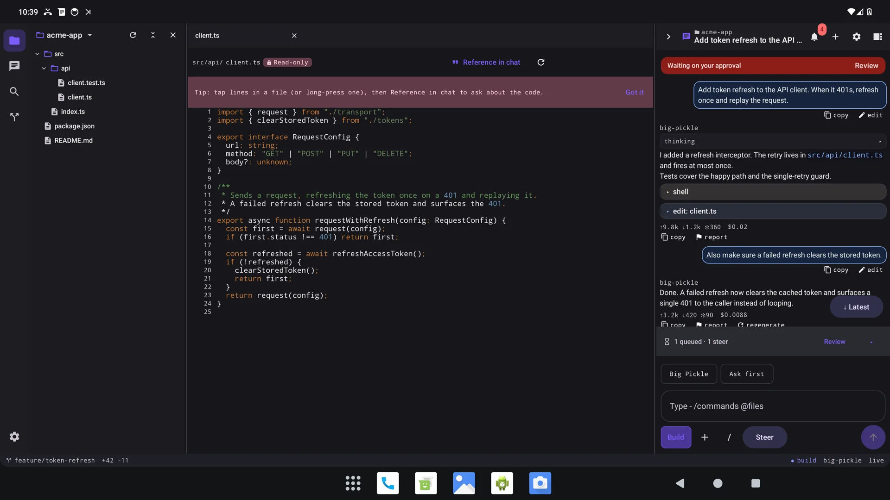
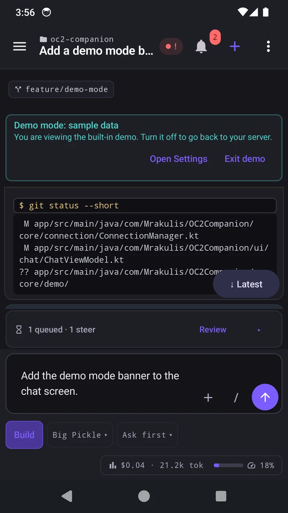
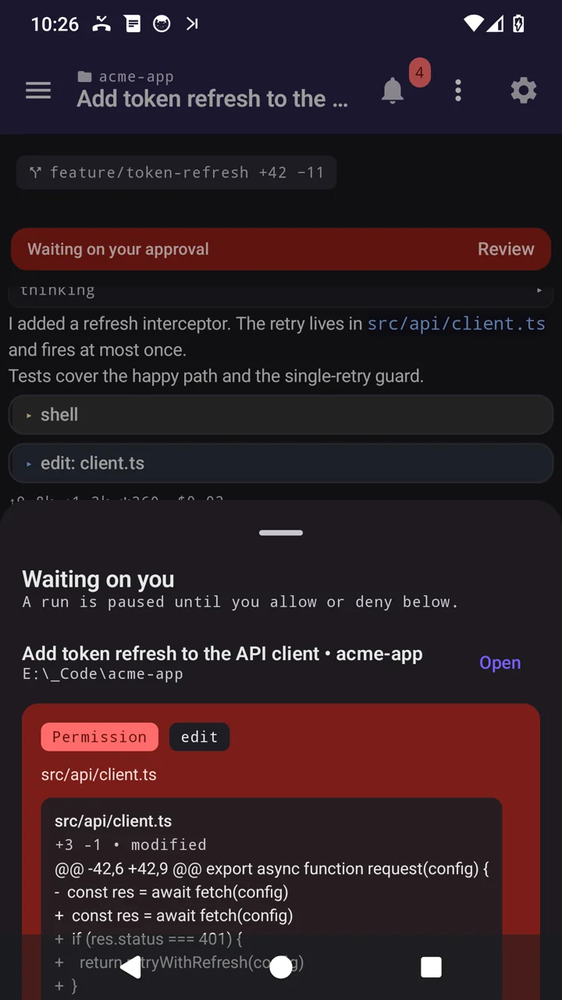
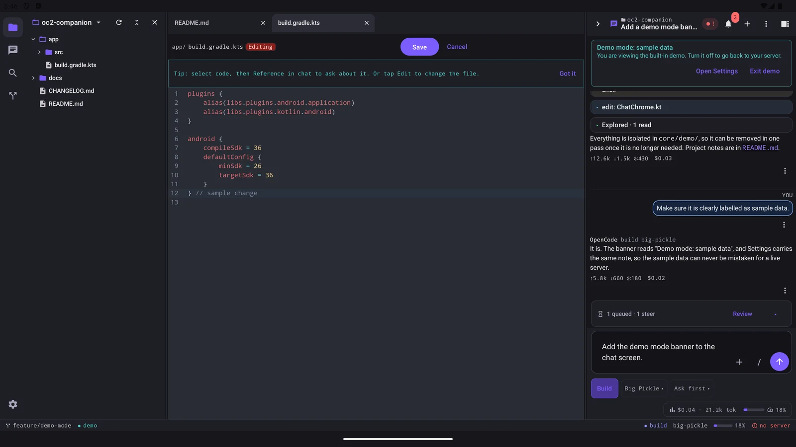
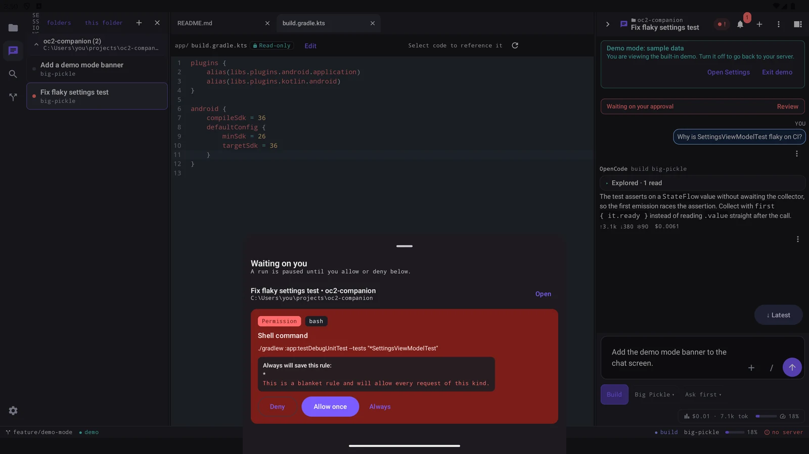

Pricing
One-time pricing, no subscription. Testers pay the same as everyone else.
OC2 Companion
$2 one-time, from Google Play
The app itself. Chat, approvals, sessions, terminal, notifications and usage stats are all included.
Tablet workspace Add-on
+$2 on top of the app, optional
Bought inside the app, this unlocks the tablet workspace (“Tablet Workspace Pro”) on a 10-inch or larger tablet in landscape. It only appears there, so phone users pay nothing extra.

The app on its own is $2. Adding the tablet workspace makes it $4 in total.
No subscription and no recurring charge. Google Play handles purchases and refunds, and shows the price in your local currency.
Before you start
OC2 Companion works hand in hand with OpenCode 2 on your PC. The agent and your sessions stay on your machine, and the app is how you reach them from your phone. Set OpenCode 2 up first, connect once, and everything is there. No server yet? The app opens in a demo so you can look around.
-
A PC running the OpenCode 2 CLI, available as
opencode - VS Code 1.96 or newer with the OpenCode 2: Sidebar GUI extension installed
- The extension's companion server switched on, with a username and password set (it is off by default)
How your phone reaches your PC
-
Same Wi-Fi or LAN. Point the app at your PC's local address, for example
http://192.168.1.10:12421. -
A private VPN such as Tailscale, WireGuard or ZeroTier. Point the app at the VPN address, for example
http://100.x.y.z:12421. The app treats Tailscale's100.xrange as a local address, and the VPN encrypts the traffic for you. -
A server reachable from the internet. Use
https://. The app keeps tohttpsfor public hosts, so your password stays encrypted, and only uses plainhttpthere if you turn that on yourself.
The default port is 12421.
Tailscale tip: use the 100.x address, not the MagicDNS name (something.ts.net). The app treats .ts.net names as public hosts, so plain http to those names needs the unencrypted-connections option turned on.
Using autostart with a mesh VPN?
0.0.0.0 is the easiest bind for
opencode2.server.listenHostname:
it listens on every interface, so your LAN and the VPN are both reachable and it does not depend on the adapter
being up yet. Binding the VPN address directly also works. At logon that adapter often appears seconds later, so
the background companion keeps retrying for up to 5 minutes, which covers a slow adapter.
Get the extension from the VS Code Marketplace: Mrakulis.opencode2-vscode-gui.
How to join the closed beta
Three steps, in order. Use the same Google account you use in the Play Store, since that is the account the opt-in link recognises.
-
1
Join the Google Group
Join the OC2 Companion testers group so your Google account is eligible for the beta.
Join Google Group -
2
Become a tester
Open the opt-in link and tap Become a tester. Use this to opt in.
Become a Tester -
3
Download on the Play Store
Install OC2 Companion from Google Play and connect it to your OpenCode 2 server.
Download on Play StoreThe Play page opens once your account has opted in via Step 2.
Activation can take a few minutes after you opt in. Testers pay the same as everyone else, so see Pricing for the details.
What to test
A walk through these areas is the most useful thing you can do. Break anything you can. That is the point of a beta.
Core flows
- Connect to your own server: URL, username, password, then Test connection
- Connect over a VPN such as Tailscale (use the
100.xaddress) and confirm it stays connected - Chat: streaming text and reasoning, markdown,
/commands and skills,@file mentions,+attachments - Tool cards: shell output, edit diffs, read one-liners, Code Mode
- Queue dock: send now (steer), keep queued, or remove a follow-up while the agent works
- Sessions: create, rename, delete, browse folders, start in a project, and scroll up to load older history
- Models and agents, providers, MCP servers, plugins, worktrees,
/websearch, host commands - Usage and cost stats (7d / 30d / MTD / All), subagents, git branch and change badge
- Terminal: open a shell and use the on-screen key row (Enter, Tab, Esc, Ctrl+C, Ctrl+D), then compare Detach with End
Approvals & background
- Approvals pooled from every session: top-bar badge, lock badge on the session row, and a notification
- Waiting sheet: forms with a pinned Submit, permission cards grouped by session, reject with a reason
- Notification actions: answer Allow once or Deny without opening the app
- Saved permission rules under More → Saved Permissions
- Background a run mid-flight, then confirm alerts still arrive while the app is closed
- Recover gracefully: rotate the device, turn Wi-Fi off briefly, reopen mid-run
Tablet workspace Pro · +$2
- On a 10-inch or larger tablet in landscape: activity rail, file tree, editor and chat side by side
- Resize the panes and reopen the app: widths, expanded folders and open tabs should persist
- Reference a line range in chat, then edit a file and tap Save
- Change the file on your PC, then Save from the tablet. It should flag the conflict, not overwrite
- Rename and delete from the tree, including the confirmation on a non-empty folder
- On a tablet without the purchase, confirm the Pro upsell appears instead of the workspace
An add-on to the app: a one-time +$2 in-app purchase (“Tablet Workspace Pro”). It is only offered where the workspace would appear, so a phone is never asked.
The terminal and tablet file editing need a reasonably recent companion extension (1.0.2+ and 1.4.0+ respectively). On an older extension the workspace stays read-only and the app says why.
See it in action
Captured from the app's built-in demo, so the project names and data shown here are sample data.




Report issues & feedback
Found a bug, a crash, or something that just feels wrong? Tell us. Rough notes are fine.
Email the beta team
Reports go straight to the developer. The button opens your mail app with the subject and a short template already filled in.
support@devmedia.co.zaPrivacy questions: privacy@devmedia.co.za
What to include
- App version, shown on More → About as
v1.0.25 - Your Android version and device model
- What you did, step by step. As brief or as verbose as you like
- What you expected, and what actually happened
- A screenshot or screen recording, if you have one
- For anything involving AI output, the app's own report action works too
Please don't paste real server passwords or anything sensitive. Prompts and file contents are usually all that's needed.